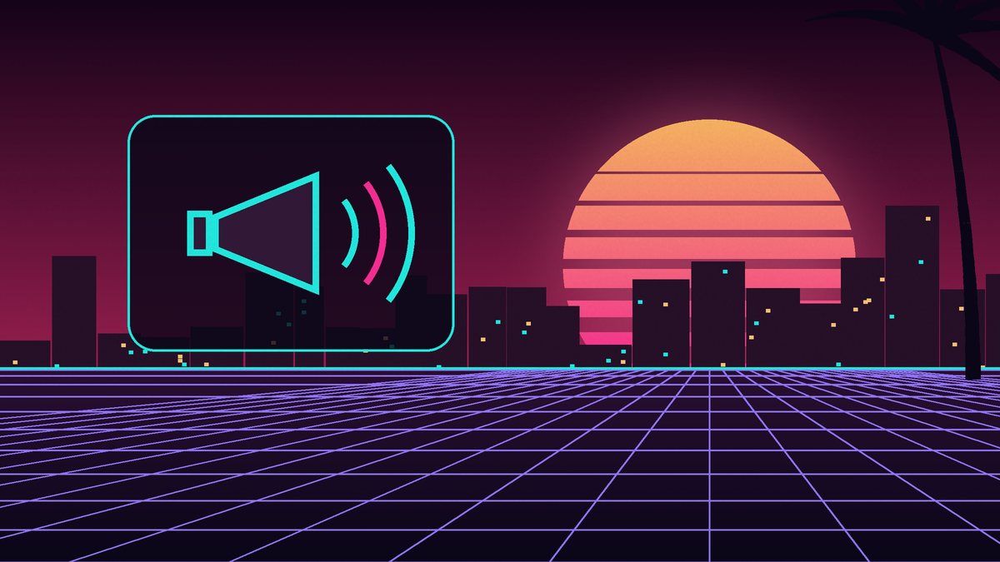

Huracanes en GTA 6: qué ha confirmado Rockstar sobre el tiempo y qué sigue sin decir
Rockstar confirmó antes del estreno que en Leonida hay tormentas tropicales y huracanes, con un sistema de tiempo rehecho para que cada zona tenga el suyo. Lo que no ha contado es cada cuánto llegan ni si cambian las misiones.
Por Redacción Golpe Diario · Publicado el · Actualizado el

Qué ha pasado
La confirmación salió en el reportaje de portada de Game Informer del 29 de septiembre de 2026, hecho con entrevistas a gente del estudio. Allí habla Owen Shepherd, vicepresidente de arte de iluminación y renderizado de Rockstar, y cuenta que han rehecho el sistema de tiempo para que sea mucho más local y más duradero. GTA Intel recoge que la revista habla de tormentas tropicales y huracanes de temporada.
Local quiere decir que una parte del mapa puede estar bajo un chaparrón mientras otra sigue seca, con nubes que cruzan Leonida y tormentas que se ven venir de lejos. eGamers.io pone un ejemplo: lluvia en Grassrivers mientras Vice City sigue soleada. Duradero quiere decir que el suelo se queda mojado y quedan charcos un rato después de que pare la lluvia; según las fuentes, el suelo y la fauna siguen mojados y pueden formarse arcoíris.
De los huracanes, Shepherd los describe como nubes muy cargadas, viento fuerte, mucha agua cayendo de tejados y farolas, truenos y relámpagos iluminando el cielo. El viento también está rehecho: brisa de mar al caer el sol, corrientes de aire caliente y edificios que cortan las rachas, con basura volando por las azoteas y rizos en la superficie del agua. Mueve también el pelo y la hierba del pantano.
Rockstar ha enseñado capturas oficiales: GTA Intel cita una de Game Informer con un frente de tormenta con rayos sobre los Leonida Keys y otra con nubarrones sobre Ambrosia de noche. eGamers.io añade que otro medio lista cinco tipos de tiempo (tormenta tropical, huracán, soleado, lluvioso y nublado), aunque ningún otro lo repite.
Hasta ahí lo confirmado. eGamers.io, que repasa el asunto punto por punto, insiste en que Rockstar no ha dicho cada cuánto aparece un huracán, si sale solo en alguna misión o también cuando vas a tu aire, si llega a inundar o romper algo, ni si el juego te avisa antes. Tampoco hay datos de cómo afectan al coche, al barco o al avión. Y una cautela: el propio medio señala que tres de los cuatro medios que cubren el tema parten del mismo reportaje de Game Informer, así que la base real es una sola fuente más las capturas oficiales, y que su autor aún no había jugado.
Qué significa para ti
- Que el tiempo sea local cambia los planes: si te pilla una tormenta, moverte de zona puede bastar para salir de ella.
- No des por hecho que vas a ver un huracán cuando te apetezca, porque Rockstar no ha explicado cómo aparecen.
- El suelo mojado y los charcos se quedan un rato después de la tormenta: es así a propósito, no es un fallo del juego.
- Si piensas navegar o volar, no cuentes con que haya avisos ni con saber cómo afecta el temporal: es una de las cosas que Rockstar no ha contado.
Lo tienes también en la guía: Trucos y consejos para el modo historia de GTA 6
Contrastado con: eGamers.io · GTA Intel · GTABase
Sigue leyendo
Rockstar explica cómo ha construido a cada vecino de Leonida para que no parezca un maniquí
Una entrevista de IGN a varios responsables de Rockstar North, recogida por otros medios especializados, destapa el trabajo que hay detrás de la gente que se cruza por la calle en GTA 6: más animaciones que en cualquier otro juego de la saga, un equipo dedicado solo a sus vidas y una norma que obliga a cada uno a tener su propia historia, aunque el jugador no la vea nunca entera.
Sam Houser habla en el estreno de GTA 6: «hemos intentado crear una experiencia que supere vuestras expectativas»
El presidente y cofundador de Rockstar, que casi nunca da declaraciones, mandó un texto a un medio mientras el juego se desbloqueaba por regiones. Resumimos lo que dice, con sus frases más claras citadas y atribuidas, y lo único que deja claro sobre el final de la historia.
3.790 millones de dólares el primer día: qué cifras del estreno de GTA 6 son oficiales y cuáles son estimaciones
Rockstar y Take-Two anunciaron 3.790 millones de dólares de gasto el día del estreno y 32,5 millones de unidades vendidas antes de salir. Por su lado, la consultora Sensor Tower calculó 24,58 millones de copias y 2.360 millones. No se contradicen, porque no miden lo mismo, y ninguna de las dos es una cifra auditada.